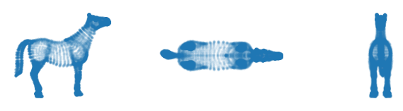
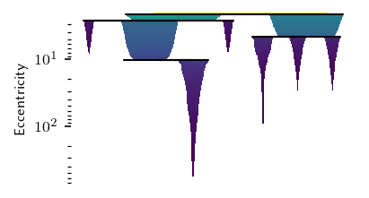
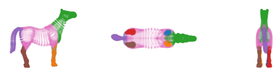
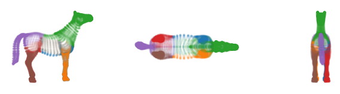
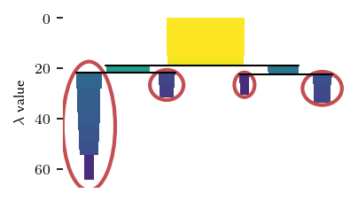
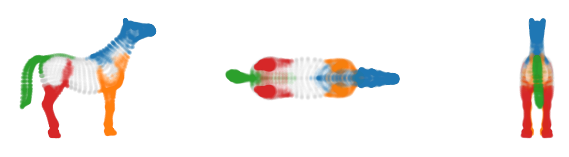
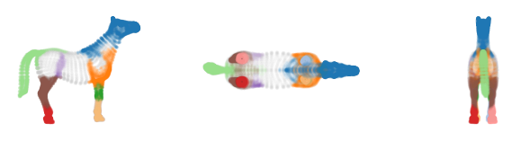
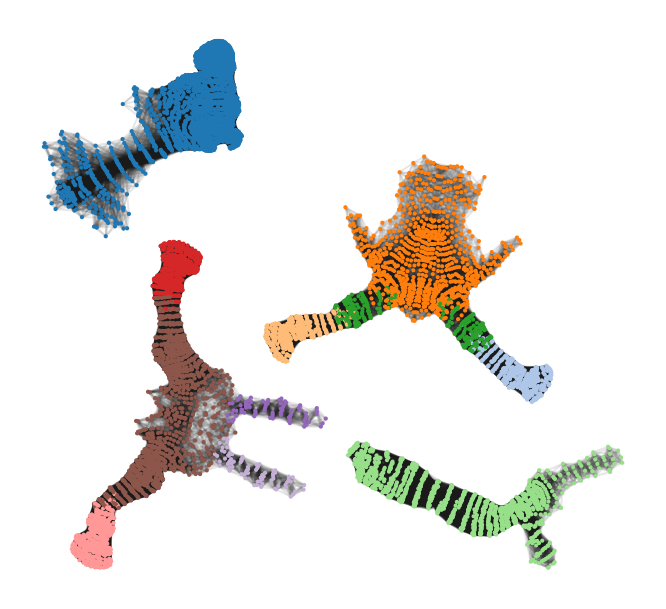
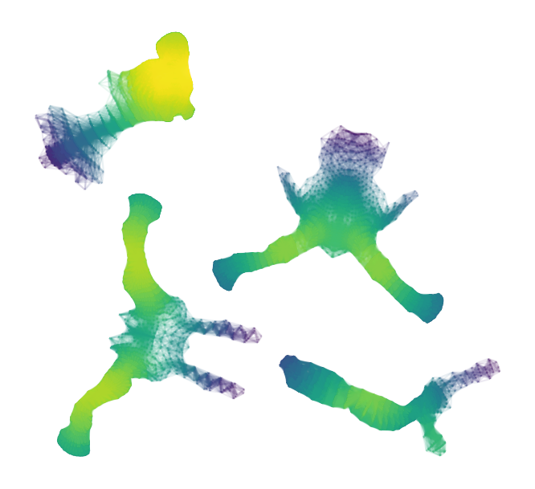

Example: Branches in 3D Horse
This notebook demonstrates how FLASC behaves on a 3D point cloud of a horse. This point cloud consists of 3D points sampled from the surface of a horse. The sampling density varies with the level of detail on the surface. For example, there are a lot more points on the head than on the stomach. In addition, the data-set has several hollow regions, which FLASC’s centrality metric has to deal with accurately.
[1]:
import numpy as np
import pandas as pd
import matplotlib.pyplot as plt
from sklearn.preprocessing import StandardScaler
from flasc import FLASC
from _plotting import *
palette = configure_matplotlib()
[2]:
df = pd.read_csv('./data/horse.csv')
X = df.to_numpy()
sized_fig(1, aspect=0.618/3)
plt.subplot(1, 3, 1)
plt.scatter(X.T[2], X.T[1], 1, alpha=0.1)
frame_off()
plt.subplot(1, 3, 2)
plt.scatter(X.T[2], X.T[0], 1, alpha=0.1)
frame_off()
plt.subplot(1, 3, 3)
plt.scatter(X.T[0], X.T[1], 1, alpha=0.1)
frame_off()
plt.show()

Single cluster
First, lets analyze this dataset as if it is a single cluster. For that purpose, we set override_cluster_labels to assign every point to the 0 cluster. This is different from allow_single_cluster, as it gives each point the same cluster membership probability. All branches in this point cloud (legs, head, and tail) are quite large, so we set min_branch_size=20. Because there are no noise points and to speed up the result, we keep min_samples=5. Note that this value is
unlikely to cross the hollow regions in the legs and torso. The resulting condensed hierarchy has two very un-persistent branches, which we filter out by setting branch_selection_persistence=0.1.
[3]:
c = FLASC(
override_cluster_labels=np.zeros(X.shape[0], dtype=np.intp),
min_samples=5,
min_branch_size=20,
branch_selection_persistence=0.1,
).fit(X)
g = c.cluster_approximation_graph_
With these settings, we find 2 main sides of the cluster, with 3 branches each.
[4]:
sized_fig()
c.cluster_condensed_trees_[0].plot(colorbar=False, leaf_separation=0.2)
plt.yscale('log')
plt.ylabel('Eccentricity')
plt.show()

The resulting branches neatly correspond to the legs, head and tail. The torso gets its own label, indicating the most central points.
[5]:
sized_fig(1, aspect=0.618/3)
plt.subplot(1, 3, 1)
plt.scatter(X.T[2], X.T[1], 1, c.labels_,
alpha=0.1, cmap='tab10', vmax=10)
frame_off()
plt.subplot(1, 3, 2)
plt.scatter(X.T[2], X.T[0], 1, c.labels_,
alpha=0.1, cmap='tab10', vmax=10)
frame_off()
plt.subplot(1, 3, 3)
plt.scatter(X.T[0], X.T[1], 1, c.labels_,
alpha=0.1, cmap='tab10', vmax=10)
frame_off()
plt.show()

Computing the branch membership vectors to re-assign each point to the closest branch centroid in the cluster approximation graph lets each branch grow into the torso for a potentially more useful segmentation.
[6]:
from flasc.prediction import branch_centrality_vectors, update_labels_with_branch_centrality
v = branch_centrality_vectors(c)
l, _ = update_labels_with_branch_centrality(c, v)
[7]:
sized_fig(1, aspect=0.618/3)
plt.subplot(1, 3, 1)
plt.scatter(X.T[2], X.T[1], 1, l,
alpha=0.1, cmap='tab10', vmax=10)
frame_off()
plt.subplot(1, 3, 2)
plt.scatter(X.T[2], X.T[0], 1, l,
alpha=0.1, cmap='tab10', vmax=10)
frame_off()
plt.subplot(1, 3, 3)
plt.scatter(X.T[0], X.T[1], 1, l,
alpha=0.1, cmap='tab10', vmax=10)
frame_off()
plt.show()

Multiple clusters
This data set can also be viewed as multiple density-based clusters. To cluster this dataset we specify min_samples=20 and min_cluster_size=1000. This results in four clusters: the tail, the head, the back legs, and the front legs. Parts of the torse are classified as noise. To detect branches within these clusters, we set min_branch_size=20 and branch_selection_persistence=0.1.
[9]:
c = FLASC(
min_samples=20,
min_cluster_size=1000,
min_branch_size=20,
branch_selection_persistence=0.1
).fit(X)
g = c.cluster_approximation_graph_
The clustering found 2 sides the each contain 2 clusters.
[10]:
sized_fig()
c.condensed_tree_.plot(select_clusters=True, colorbar=False)
plt.show()

The resulting clusters neatly capture the tail, back legs, front legs and head.
[11]:
sized_fig(1, aspect=0.618/3)
plt.subplot(1, 3, 1)
colors = [palette[l] if l >= 0 else (0.8, 0.8, 0.8) for l in c.cluster_labels_]
plt.scatter(X.T[2], X.T[1], 1, colors,
alpha=0.1)
frame_off()
plt.subplot(1, 3, 2)
plt.scatter(X.T[2], X.T[0], 1, colors,
alpha=0.1)
frame_off()
plt.subplot(1, 3, 3)
plt.scatter(X.T[0], X.T[1], 1, colors,
alpha=0.1)
frame_off()
plt.show()

The branches detect the individual lower-legs, hips and shoulder-region as distinct branches.
[13]:
sized_fig(1, aspect=0.618/3)
palette = plt.get_cmap('tab20').colors
plt.subplot(1, 3, 1)
colors = [
palette[l] if l >= 0 else (0.8, 0.8, 0.8)
for l in c.labels_
]
plt.scatter(X.T[2], X.T[1], 1, colors,
alpha=0.1)
frame_off()
plt.subplot(1, 3, 2)
plt.scatter(X.T[2], X.T[0], 1, colors,
alpha=0.1)
frame_off()
plt.subplot(1, 3, 3)
plt.scatter(X.T[0], X.T[1], 1, colors,
alpha=0.1)
frame_off()
plt.show()

The branch grouping is easier to see when drawn over the cluster approximation graphs. A potential issue with this segmentation is that the label for the most central points in the front-legs consists of two distinct connected component. This happens for U-shaped clusters in general, where the centroid lies between the branches, and both branches have a local centrality maximum.
[16]:
sized_fig(1, aspect=1)
g.plot(edge_alpha=0.1, node_color=[
palette[l % 20] for l in c.labels_[g.point_mask]
])
frame_off()
plt.show()

These graphs also show how the centrality metric behaves.
[15]:
sized_fig(1, aspect=1)
g.plot(node_alpha=0, edge_color='centrality', edge_alpha=0.1)
frame_off()
plt.show()
